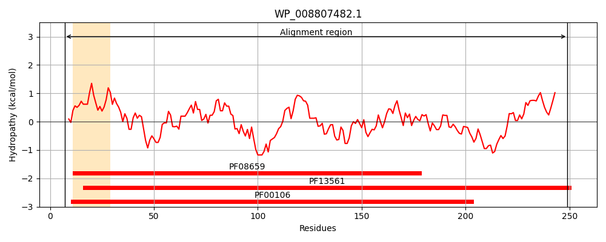
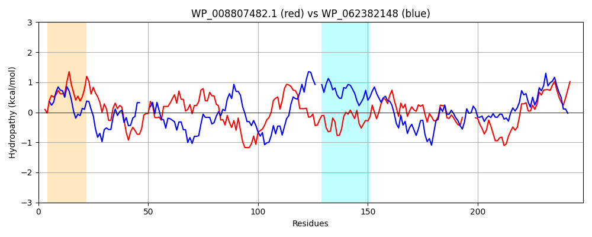

Hit Accession: WP_062382148
Hit TCID: 1.A.115.1.5
Hit Description: gnl|BL_ORD_ID|21287 gnl|TC-DB|WP_062382148.1|1.A.115.1.5 SDR family oxidoreductase [Pseudomonas abietaniphila]
Mach Len: 248
e:0.000000
Query TMS Count : 1
Hit TMS Count: 1
TMS-Overlap Score: 0.000000
Predicted Substrates:None
BLAST Alignment:
Score: 266 , Bit scores: 107 bits, E-value: 4.9e-28, Alignment length: 248, Percentage identity: 30
Query: 7 LQGKRILITGAGQGIGFVMAQGLAQYGAEIIINDLSAPRADDAVMKLRDEGATAHAAVFNVTDAEAVEEAIANIEAHLGPIDVLFNNAGIQRRHPFTEFPVQEWNDVISVNQTAVFLVSQAVAKRMVDRQQGKIINICSMQSELGRDTITPYAAAKGAVKMLTRGMCVELARHNIQVNGIAPGYFNTAMTRTLV-----EDKAFTDWLCKRTPAARWGDPQELVGAAVFLSSNASNFVNGHLLFVDGG 249
L+GK L+TG GIG A+ A+ GA + I D AV ++ A + T+ E ++ I G +DVLF NAG P + ++ D N V Q + + +I S G + YAA+K AV+ R ++L N++VN ++PG T L + + D+L + P R G+P+E+ AA+FL+S+ ++FVNG LFVDGG
Sbjct: 5 LEGKIALVTGGTTGIGLATAKRFAEEGAYVYITGRRQAELDAAVARV----GNATGVQVDSTNLEQLDALYRQIGTEKGRLDVLFANAGGGSMLPLGDITEAQYQDTFDRNVKGVLFTVQKALPLLA--KGASVILTGSTAGSSGTAAFSVYAASKAAVRAFARNWILDLKDRNVRVNTLSPGATRTPGLVDLAGPDAAQQQGLLDYLASQIPMGRVGEPEEIAAAALFLASDDASFVNGIELFVDGG 246 | Protein Hydropathy Plots: |
|---|
|  |  |
Pairwise Alignment-Hydropathy Plot:
|
|---|
|  |